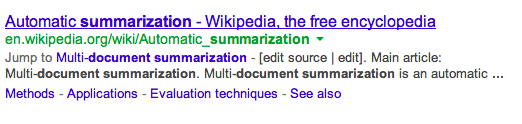
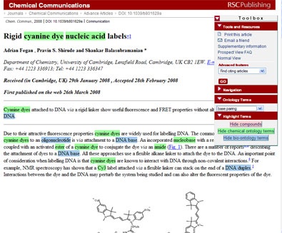

# SenRank
## A novel automatic summarisation algorithm
## Motivation
1. Explosive number of documents online
1. Necessitates a fast way to filter the information
1. Automatic summarisation aids readers in such processes
Examples
-
Search Engine Previews

-
Automatic highlights

## Fomulation
* Assumption
1. Articles consist of ideas
1. Ideas flow
1. Each sentence presents some ideas
1. Ideas are expressed through words
1. Overlap of words signifies relation of ideas
1. Thus relation of sentences
## Fomulation
* A sentence is *summarising* if ideas from many other sentences flow to it
* A set of sentences with such characteristics can be a summary
* Note that overlapping of ideas in sentences within such a set should be minimized to achieve a _succinct_ summary.
## Fomulation
* An article is a graph of sentences
* Two sentences are connected if they are related
* A sentence is more likely to flow to another if the edge has a higher weight.
* The weight of the edge is proportional to their relation
* Compute how likely it is to flow to a certain sentence
* Aggregate the top few (non-overlapping) sentences as summary
## Solution
1. The relation of two sentence, therefore the weight of edge connecting them
* = number of word overlaps
* Not all words can be counted
* plus number of shared references in both sentences
1. The edges are bi-directional
## Solution
1. Simulate a random walk on such a graph
* With PageRank™
1. Rank the sentences with their PageRank™ score
1. Pick the top sentences that do not overlap too much
## Algorithm
#### **Tokenize** → Compute Co-reference → Parse Co-reference → Count Overlap → Build Adjacency Matrix → Run PageRank → Generate Summary
-----
* We use Stanford Corenlp to tokenize articles
## Algorithm
#### Tokenize → **Compute Co-reference** → Parse Co-reference → Count Overlap → Build Adjacency Matrix → Run PageRank → Generate Summary
-----
* We use Stanford Corenlp to compute co-references
## Algorithm
#### Tokenize → Compute Co-reference → **Parse Co-reference** → Count Overlap → Build Adjacency Matrix → Run PageRank → Generate Summary
-----
* The co-reference data is a list of tuples $(c_1, c_2,...,c_n)$
* Note that there can be some $i, j$ such that $i \neq j$ and $c_i = c_j$ in some tuples
* Using the co-reference information, we build an adjacency Matrix $$A_{ij} = a_i + a_j$$
* where
* $k$ is some constant
* $a_i$ is the number of times $i$th sentence appearing in tuples that contains $j$th sentences
* Conversely for $a_j$
Algorithm
Tokenize → Compute Co-reference → Parse Co-reference → Count Overlap → Build Adjacency Matrix → Run PageRank → Generate Summary
- Build another adjacency Matrix
$$B_{ij} = \sum\limits_{w \in W} w_iw_j$$
where $W$ is the set of words we consider for overlapping and $w_i$ is the number of times Word $w$ appears in sentence $i$
Algorithm
Tokenize → Compute Co-reference → Parse Co-reference → Count Overlap → Build Adjacency Matrix → Run PageRank → Generate Summary
-
The final adjancency Matrix is
$$ C = k_aA + k_bB $$
where $k_a, k_b$ are some constants
Algorithm
Tokenize → Compute Co-reference → Parse Co-reference → Count Overlap → Build Adjacency Matrix → Run PageRank → Generate Summary
-
We run PageRank on $C$ to obtain a PageRank score for all sentences
Algorithm
Tokenize → Compute Co-reference → Parse Co-reference → Count Overlap → Build Adjacency Matrix → Run PageRank → Generate Summary
-
$S$ is the set of all sentences
-
$R$ is the set of sentences in the summary
-
Loop while $S \neq \emptyset$
- Pick $s \in S$ such that s has a highest score
- $R = R \cup \{s\}$
- Let $T = \{\text{sentence } i \mid C_{si} > m\}$
- $S = S - T$
- If $R$ exceeds the word limit, trancate the last sentence added to match the word limit
- If $R$ is matches the word limit, terminate the loop
-
Output sentences in $R$ according to their original order in $S$
## Experiment Setup
* We use 178 papers in _Scholarly Paper Recommendation Dataset_ from WING, NUS
* The abstracts are used as model summaries and the contents are used as input
* We use ROUGE to evaluate the quality of our summaries based on the abstracts
* For our experiment, we use the R-score from ROGUE since the model summaries do not have a word limit
* For our algorithms, the word limit is set to $200$
* $m$ used in removing overlapping sentence is set to $20$
## Algorithms
### $$ C = k_aA + k_bB $$
* Random: randomly pick sentences from content
* Degree: $k_a = 0$ (do not consider co-reference), and do not run PageRank, just rank by the degrees
* PageRank: $k_a = 0$ (do not consider co-reference)
* Coref_equal: $k_a = 1, k_b = 1$
* Coref_twice: $k_a = 2, k_b = 1$
* Coref_large: $k_a = 5, k_b = 1$
* Coref_only: $k_a = 1, k_b = 0$ (only consider co-reference)
## Results
..mean table here..
## Comparison
* Random < Degree